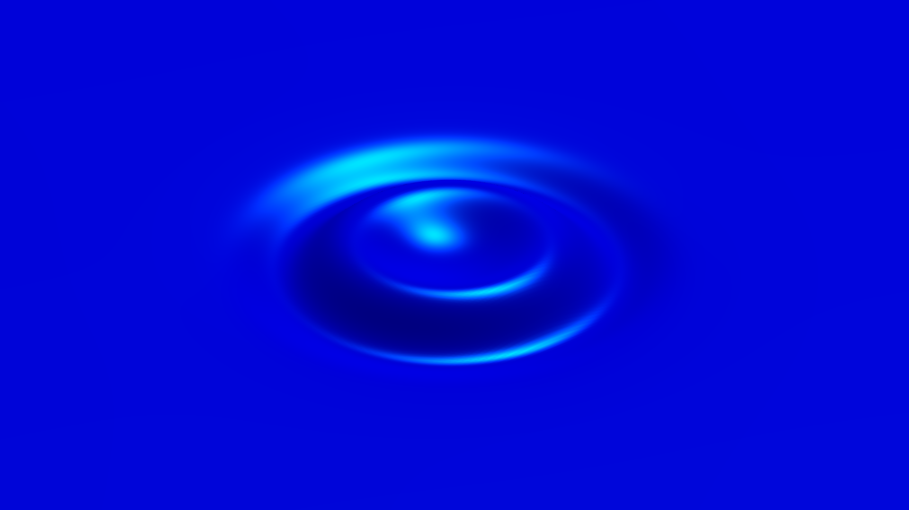
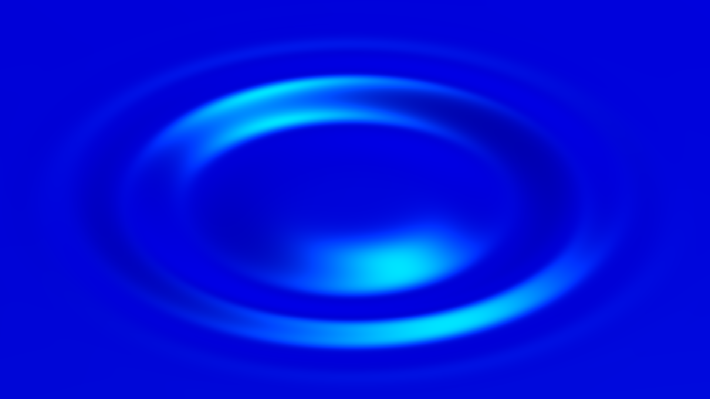
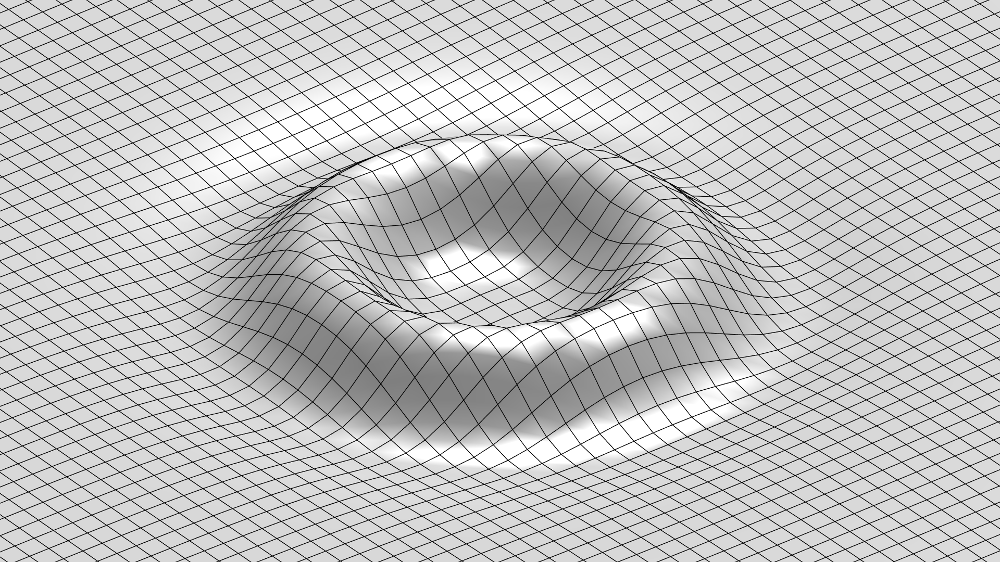
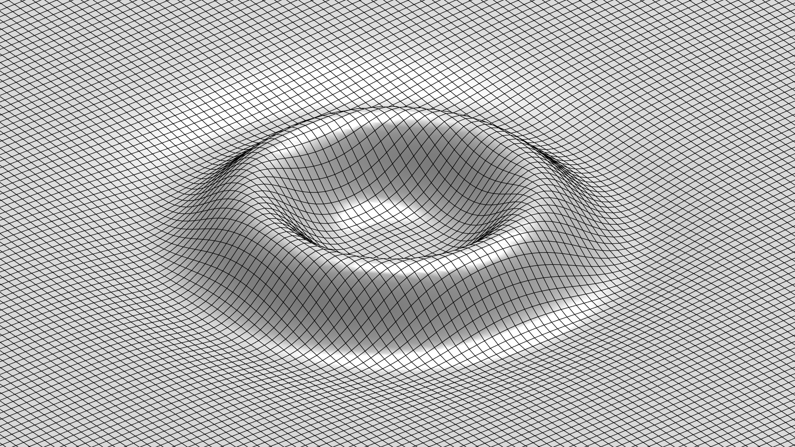
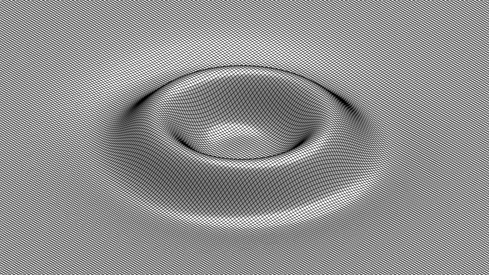
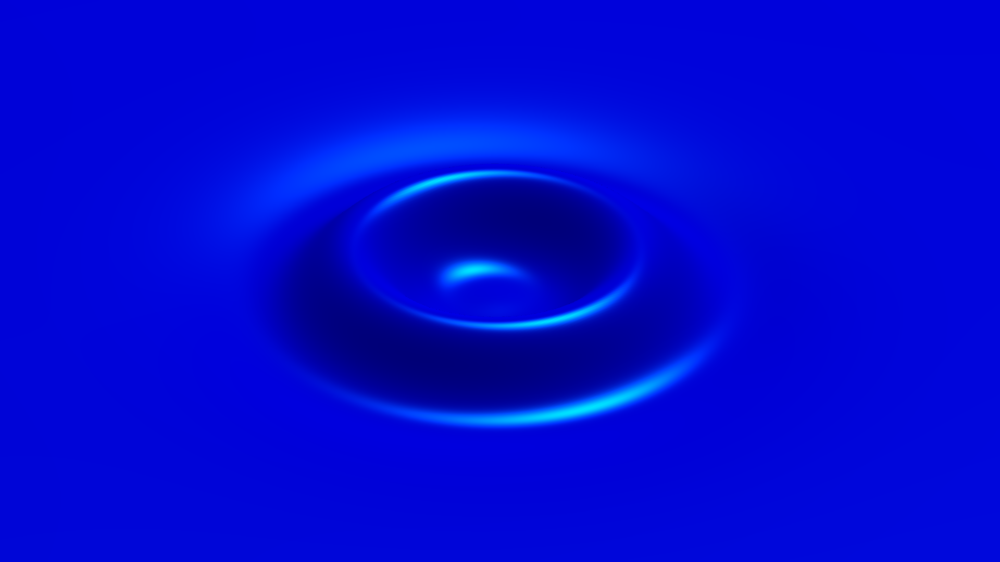
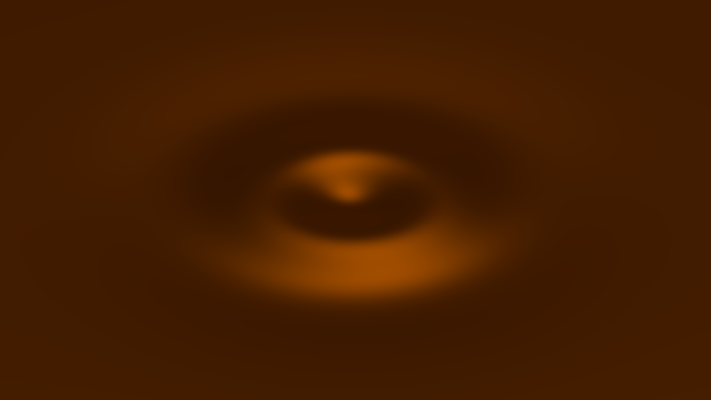
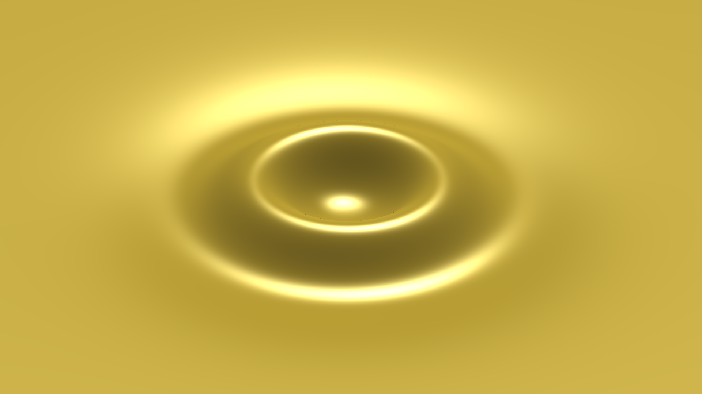
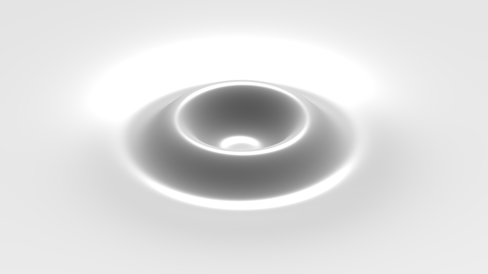
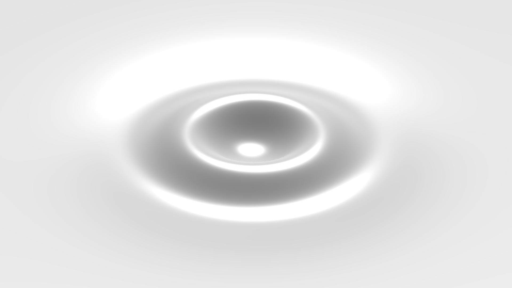

Examples
These MATLAB examples demonstrate source excitation, wave interference, and reflection, and show how to inspect physical quantities. See Interpreting the experiments for guidance on wave propagation, interference, and viscous dissipation. Use the physical dimensions shown in the bottom panel when comparing results, and restore the default experiment between unrelated investigations.
For each comparison, predict what will change, inspect the resulting wave field, and explain the observation using the governing equations. The learning objectives identify the concepts addressed by these examples.
Application examples
Add the examples folder to the MATLAB path, then call a function such as
app = gravityWavesExample(). The interactive examples and four application
demonstrations return an app.RippleSimulatorApp object and leave the application open. Click the surface to add sources and
use the menus and controls to change the experiment. Close the window or call
app.close() when finished.
Interactive examples
These examples begin with a still surface and the stated experiment settings.
| Function | Description |
|---|---|
gravityWavesExample |
Gravity-scale water waves |
gravityCapillaryWavesExample |
Water with equal gravity and capillary restoring contributions at the characteristic wavelength |
capillaryWavesExample |
Capillary-scale water waves at the preset 0.10x playback rate |
waveReflectionExample |
Water in a 0.3 m square with ideal reflecting walls, viewed from above |
oliveOilRipplesExample |
Extra virgin olive-oil preset at a nominal temperature of 23 °C |
siliconeOil5cStRipplesExample |
KF-96L-5cs silicone-oil preset at 25 °C |
siliconeOil100cStRipplesExample |
KF-96-100cs silicone-oil preset at 25 °C |
moltenChocolateRipplesExample |
Newtonian approximation for molten compound chocolate at 60 °C |
honeyRipplesExample |
Newtonian approximation for acacia honey at 30 °C |
wavemakerRipplesExample |
Four-cycle localized wavemaker in gravity-scale water |
wireframeRipplesExample |
Gravity-scale water with the wireframe display |
colormapRipplesExample |
Gravity-scale water colored by surface elevation with the HSV colormap, viewed from above |
The gravity-capillary example has equal restoring contributions at its characteristic wavelength; its localized source excites wavelengths on both sides. Material examples use the app's source and display presets. The honey and chocolate property sets are Newtonian approximations; their source data and constitutive assumptions are described in Materials. Wireframe and colormap settings change only the display.
The application demonstrations start the stated inputs and remain open for further interaction.
Use plotWaveDispersion to compare the deep-water inviscid phase and group
velocities over a range of wavelengths. It returns wavelengths, angular
frequencies, both velocities, and the crossover wavelength. Use inspectWaveField
to examine the full viscous evolution of a localized disturbance. It returns
surface elevation, vertical velocity, and horizontal elevation gradients,
together with the sample times and spatial coordinates.
| Function | Description |
|---|---|
waveInterferenceExample |
Two simultaneous sources at opposite positions |
sideReflectionExample |
One source near the right wall, viewed from above |
cornerReflectionExample |
One source near the top-right corner, viewed from above |
rainRipplesExample |
One reproducible burst of twenty localized sources |
plotWaveDispersion |
Compare inviscid phase and group velocities over a range of wavelengths |
inspectWaveField |
Observe the full viscous evolution of a localized disturbance through settling |
The reflection demonstrations use a 0.3 m square domain. Their sources are at
[0.100125, 0] m and [0.100125, 0.100125] m, respectively. The interference
example uses the Gravity water setup with equal sources at
[-0.063375, -0.013] m and [0.063375, 0.013] m, applied at the same physical
time.
app = rippleSimulator(Setup="Balanced");
app.addRipple([0, 0]);Follow the central disturbance as rings spread outward. A localized Gaussian input excites multiple wavenumbers, so the pattern is dispersive. The impulse starts from zero elevation; its initial vertical motion develops into visible elevation during playback.
The Balanced water experiment at 0.103 s, with a 17.1 mm characteristic wavelength and a 26.82 mPa·s pressure impulse. The 801-by-801 grid resolves the outward rings.
The concentric crests and troughs reflect the radial symmetry of the pressure impulse. Wave dispersion changes their spacing during propagation, while geometric spreading and viscous dissipation reduce the amplitude of the outward waves.
Check your reasoning: How does doubling the pressure strength affect the wave height and ring spacing at the same elapsed time after excitation?
The supplied example animates a central water disturbance from zero elevation through settling. The elevation map and complete centerline profile include the full displacement; a separately scaled outward profile shows the smaller traveling rings. All scales remain fixed throughout playback. The example uses the Capillary water setup with a four-cycle wavemaker. The duration follows the source's calculated settling time, including the finite settling envelope.
exampleFolder = fullfile(fileparts(which("rippleSimulator")), "examples");
addpath(exampleFolder);
waveField = inspectWaveField();
size(waveField.Elevation)ans =
201 201 401
The central displacement oscillates during forcing, while successive rings travel outward. The outward profile resolves their smaller elevations on a separate fixed scale. Its crests and troughs correspond to the rings in the wave field and to the same features in the complete centerline profile.
waveField contains the complete time history. Elevation, Velocity,
GradientX, and GradientY are N-by-N-by-T arrays, where N is the
number of nodes per axis and T is the number of sample times. Rows correspond
to y, columns to x, and page j to waveField.Time(j). Time is in seconds;
Coordinates, DomainSize, and Elevation are in meters; Velocity is in m/s;
the elevation gradients are dimensionless. The figure reports millimeters
horizontally and micrometers vertically.
The wave field is precomputed at uniformly spaced time steps. Sampled playback displays every time step; rendering delays can extend its duration. ElapsedTime playback follows elapsed time and may skip intermediate time steps. Both modes use the same calculated sequence.
inspectWaveField(Setup="Gravity", SourceMode="Wavemaker", ...
Wavelength=0.05, PressureImpulse=0.1, PlaybackMode="Sampled");| Option | Description |
|---|---|
Setup |
"Gravity", "Balanced", or "Capillary"; defaults to "Capillary". |
SourceMode |
"Impulse" or the four-cycle "Wavemaker"; defaults to "Wavemaker". |
Wavelength |
Characteristic wavelength in meters; defaults to the selected setup. |
PressureImpulse |
Pressure strength in Pa·s; defaults to the selected setup. |
PlaybackRate |
Positive playback multiplier; 0.25 for Gravity and Balanced, 0.10 for Capillary unless specified. |
PlaybackMode |
"Sampled" or "ElapsedTime"; defaults to "Sampled". |
SampleInterval |
Maximum time step between wave field samples, in seconds. The default provides at least 40 samples per reference period and targets at least 50 displayed samples per second at the requested playback rate. |
Wavelength and pressure strength overrides retain the setup's physical domain and must satisfy the app's sampling and small-slope criteria. The restoring balance is determined by the specified wavelength and fluid properties. An explicit wavelength override can therefore change the dominant restoring force.
Check your reasoning: Compare the outward motion of a crest with the vertical oscillation of the surface. How does the position of a crest change over time, and how does the surface elevation change at a fixed distance from the source?
Compare physical scales
Select Experiment > New scaled experiment and compare the gravity wave, gravity–capillary balance, and capillary wave scales. Create a central pressure impulse in each setup, keeping water at 20 °C and the height scale at 100x.
Selecting a setup changes the domain size, characteristic wavelength, and pressure strength. The Gravity domain spans 13 characteristic wavelengths per side, while the Balanced and Capillary domains span 6.5. Gravity and Balanced start at 0.25x playback, and Capillary starts at 0.10x. This scaling makes patterns easier to compare visually. The actual frequencies, propagation speeds, pressure strengths, and physical durations differ.
| Gravity | Balanced | Capillary |
|---|---|---|
 |
 |


Ripples from central pressure impulses in water at 20 °C, shown after one reference period at each characteristic wavelength. The Gravity, Balanced, and Capillary observation domains are 650 × 650 mm, 111.3 × 111.3 mm, and 32.5 × 32.5 mm, respectively. Each uses an 801 × 801 grid and a 100x height scale. The images show close views of the surface rather than the full domains, with the zoom adjusted so that the characteristic wavelength has the same displayed length in each image.
After one reference period in each setup, the main outward crest lies farther from the source in the Capillary than in the Gravity wave setup when distance is measured in characteristic wavelengths. This is consistent with the wavelength dependence of group velocity. For a narrow wave packet centered on the characteristic wavelength, the inviscid dispersion relation predicts travel distances of approximately 0.60 wavelengths for the Gravity, 1.00 for the Balanced, and 1.42 for the Capillary wave setup during one reference period.
The table below lists the preset parameters and the relative contributions of gravity and surface tension at each characteristic wavelength. Each percentage gives the contribution of the restoring force to the squared reference angular frequency supplied by the corresponding term in the inviscid gravity–capillary wave dispersion relation:
| Quantity | Gravity | Balanced | Capillary |
|---|---|---|---|
| Characteristic wavelength (mm) | 50 | 17.1 | 5 |
| Domain side length (mm) | 650 | 111.3 | 32.5 |
| Pressure strength (mPa·s) | 100 | 26.82 | 10.67 |
| Reference period (s) | 0.1693 | 0.0741 | 0.0159 |
| Gravity contribution (%) | 89.5 | 50 | 7.9 |
| Surface tension contribution (%) | 10.5 | 50 | 92.1 |
Relative contributions of the restoring forces of gravity and surface tension in water at 20 °C. The vertical lines from left to right mark the characteristic wavelengths of the Capillary, Balanced, and Gravity setups respectively.
Gravity is the dominant restoring force at the 50 mm characteristic wavelength, whereas surface tension dominates at 5 mm. Their contributions are equal at approximately 17.1 mm. Each Gaussian pressure impulse excites a spectrum of wavelengths, so the restoring balance varies among the components within each ripple. Components of different wavelengths propagate at different velocities according to the dispersion relation, changing the ring spacing as the wave field evolves.
Check your reasoning: If a wave component's wavelength is halved while the fluid properties remain constant, how do the relative contributions of the restoring forces of gravity and surface tension change?
Open examples/plotWaveDispersion.m in the MATLAB Editor and run it. The
example obtains water properties from the app's public record and plots the
deep-water inviscid phase and group velocities from the governing dispersion relation.
waveProperties = plotWaveDispersion();The waveProperties structure contains Wavelength (m), AngularFrequency
(rad/s), PhaseVelocity (m/s), and GroupVelocity (m/s), each a 1-by-400 array.
The scalar CrossoverWavelength (m) identifies equal gravity and
surface-tension contributions.
Water at 20 °C, density and surface tension from the app's IAPWS property record; gravity 9.81 m/s². The curves show the inviscid phase and group velocities. Wavelengths span 2–200 mm.
The group and phase velocities coincide at the minimum phase velocity, where gravity and surface tension have equal restoring contributions. At long wavelengths the deep-water gravity limit has group velocity half the phase velocity. In the short-wavelength capillary limit, group velocity is three halves of phase velocity.
Check your reasoning: In the gravity-wave and capillary-wave limits, does an individual crest move ahead of or behind the wave-packet envelope? Relate the velocity curves to the rings observed in the app.
Choose the balanced setup and apply sources on opposite sides of the center:
app.applySetup("Balanced");
distance = app.DomainSize/5;
app.Paused = true;
app.addRipple([-distance, 0]);
app.addRipple([distance, 0]);
app.Paused = false;The two sources' elevations are superimposed. Each command records its own start time. Pausing fixes the physical time while both sources are added, so they begin simultaneously.
Two simultaneous ripples, shown 0.109 s after excitation. Their overlapping rings produce constructive and destructive interference; the fluid and source properties are identical.
Where two crests or two troughs overlap, their surface elevations reinforce one another. Where a crest overlaps a trough, their opposite surface elevations partially or completely cancel. The resulting wave field follows from the linear superposition of the two ripples.
Check your reasoning: If the surface elevations of two ripples cancel at a
point, must their vertical velocities also cancel at that instant? Use the
snapshot method to inspect both quantities
at the same time.
app.applySetup("Balanced");
app.Paused = true;
app.addRipple([-app.DomainSize/5, 0]);
app.Wavelength = 0.01;
app.addRipple([app.DomainSize/5, 0]);
app.Paused = false;The first source retains its original spectrum. The second uses the new 10-mm characteristic wavelength. The physical domain and fluid remain fixed. The pressure strength is also retained. Changing the source width can change the resulting wave height.
Ripples generated by sources with 17.1 mm and 10 mm characteristic wavelengths, shown 0.109 s after excitation. Both use a 26.82 mPa·s pressure impulse in the same Balanced domain.
The shorter characteristic wavelength gives the right-hand source a smaller spatial footprint and shifts its spectrum toward shorter wavelengths. The different ring spacings arise from these source spectra and the wavelength dependence of the wave velocities.
Check your reasoning: Why can the two sources produce different wave heights despite having the same pressure strength?
Enable wave reflection with a reflection coefficient of 100%:
app.applySetup("Gravity");
app.ReflectionCoefficient = 1;
app.ReflectionsEnabled = true;
app.addRipple([0.2, 0]);Waves return from the boundaries and interfere with later disturbances. Use the wide or top camera view to inspect the boundaries. The walls are impermeable and free-slip, with a 90-degree contact angle; there is no bottom or wall-friction model. Viscous dissipation continues to act on the reflected waves. The same finite-duration envelope makes every source exactly zero at its settling deadline; reflection does not restart a source's lifetime.
An impulse at [0.2, 0] m in a 650-by-650 mm domain with ideal reflecting walls, viewed from above at 1.016 s. The returning rings overlap the outgoing wave.
For partial reflection, choose Experiment > Wave reflection > Reflection coefficient > 50%. A wave component retains 50% of its initial amplitude after one boundary encounter and 25% after two. The corresponding energy fractions are 25% and 6.25%, before accounting for viscous loss along the path. These fractions apply to reflected components; overlapping waves can produce a different maximum elevation in the combined field.
Check your reasoning: For a reflection coefficient of 80%, what percentages of a wave component's initial amplitude and energy remain after two boundary encounters? How do two successive wall encounters differ from two reflected components arriving at the same point?
The random seed determines the burst positions:
app.reset();
app.RandomSeed = 42;
app.rain();To repeat the positions with the same physical settings, clear the surface and set the seed again before starting the next burst. Clear alone preserves the generator's progression. At its default pressure multiplier, rain has the same pressure strength as clicking.
A seed-42 rain burst at 0.637 s. The 801 × 801 observation grid resolves the overlapping ripples from twenty localized sources.
Individual rings remain circular around their source positions. Their overlapping crests and troughs form the irregular combined wave field through constructive and destructive interference. Because the inputs occur at different times, the rings also represent different stages of propagation.
Check your reasoning: For two rain bursts with the same random seed, which other settings must match to produce identical wave profiles at the same elapsed time?
For a controlled comparison, keep density, surface tension, source loading, physical dimensions, and playback unchanged. Begin with the default water experiment and observe one central impulse:
app.applySetup("Gravity");
app.HeightScale = 100;
fluid = app.FluidProperties;
app.addRipple([0, 0]);Then create a custom fluid with twenty times the dynamic viscosity and repeat the same input:
fluid.DynamicViscosity = 20*fluid.DynamicViscosity;
app.FluidProperties = fluid;
app.addRipple([0, 0]);Assigning the custom properties starts a fresh experiment while preserving the source and the manually selected height scale. Compare the pattern at the same elapsed time after excitation, before the finite settling envelope attenuates the response.
A central 100 mPa·s impulse with a 50 mm characteristic wavelength. The radial profiles are evaluated at 0.339 s; the histories are sampled 50 mm from the source. Density and surface tension remain fixed at their water values at 20 °C. Both plots show physical elevations on the same vertical scale.
Increasing the viscosity reduces the crest elevations and trough depths in both plots. Viscous dissipation acts to reduce the wave energy and attenuates the shorter-wavelength components more rapidly.
Check your reasoning: Why does the rate of attenuation due to viscous dissipation depend on the wavelength? Why would selecting a different material not isolate the effect of viscosity?
The snapshot method retrieves the wave field
data at the current simulation time. Comparing these data on different
observation grids reveals the effect of spatial resolution on the sampled
physical quantities.
Pause playback and retrieve the wave field data:
app.Paused = true;
waveField = app.snapshot(Derivatives=true);
peakElevation = max(abs(waveField.Elevation), [], "all");
peakSpeed = max(abs(waveField.Velocity), [], "all");
peakSlope = max(hypot(waveField.GradientX, waveField.GradientY), [], "all");Each snapshot contains Elevation, Velocity, GradientX, GradientY, and
the physical coordinates.
peakElevation is the maximum absolute surface elevation in meters,
peakSpeed is the maximum vertical speed in m/s, and peakSlope is
dimensionless. These are maxima over the grid nodes, not guaranteed continuous-space
maxima. Changing vertical exaggeration changes none of these values.
The crest elevation is the highest sampled elevation relative to the still water level. The trough depth is the greatest depth below the still water level, reported as a nonnegative value. Wave height is the difference between the highest and lowest sampled elevations. In an overlapping or dispersive wave field, these extrema do not necessarily have equal magnitudes or belong to the same wave.
For a complete time history, see Observe the wave field.
The observation grid defines the spatial discretization used to sample the wave field. Increasing the number of nodes within a fixed physical domain decreases the grid spacing and increases spatial resolution. To compare spatial sampling, keep playback paused and retrieve the same wave field on grids with 101, 201, and 401 nodes per side:
app.Paused = true;
app.Wireframe = true;
app.GridResolution = 101;
coarse = app.snapshot(Derivatives=true);
app.GridResolution = 201;
medium = app.snapshot(Derivatives=true);
app.GridResolution = 401;
fine = app.snapshot(Derivatives=true);
settings = app.describe();The describe record contains the material, source, domain, display, timing,
and numerical settings.
Compare the sampled wave height on each grid:
nodesPerSide = [101; 201; 401];
gridSpacing = app.DomainSize./(nodesPerSide - 1);
waveHeight = [
max(coarse.Elevation, [], "all") - min(coarse.Elevation, [], "all");
max(medium.Elevation, [], "all") - min(medium.Elevation, [], "all");
max(fine.Elevation, [], "all") - min(fine.Elevation, [], "all")];
samplingComparison = table(nodesPerSide, gridSpacing*1e3, waveHeight*1e6, ...
VariableNames=["NodesPerSide", "GridSpacing_mm", "WaveHeight_um"])| 101 × 101 nodes | 201 × 201 nodes | 401 × 401 nodes |
|---|---|---|
 |
 |
 |
| Grid spacing: 6.5 mm | Grid spacing: 3.25 mm | Grid spacing: 1.625 mm |


A central 100 mPa·s pressure impulse in water at 25 °C, with a 100 mm characteristic wavelength, shown at 0.275 s on three observation grids. All three views use a 650 × 650 mm domain, a 300x height scale, and identical camera and lighting settings.
The grid spacing halves at each refinement, adding samples between the existing nodes. All three grids resolve the main ring; the finer grids represent its curvature with more samples. In this example, the sampled wave height differs by approximately 0.27% between the 101 × 101 and 401 × 401 grids. Sampled extrema can change slightly as additional nodes approach the extrema of the continuous wave field.
See Spatial sampling for the grid requirements.
Check your reasoning: If the characteristic wavelength is halved while the domain size remains unchanged, how should the grid resolution change to maintain the same number of samples per wavelength?
Compare a central pressure impulse in water, acacia honey, molten chocolate, olive oil, and the two silicone grades. Start with the gravity setup. After selecting each material, set the characteristic wavelength to 100 mm, the pressure strength to 100 mPa·s, and the height scale to 300x. Set water to 25 °C; retain the other materials' preset temperatures. Keep the excitation method, physical domain, grid resolution, playback rate, and camera fixed.
| Water, 25 °C | Acacia honey, 30 °C | Molten chocolate, 60 °C |
|---|---|---|
 |
 |


| Olive oil, nominal 23 °C | 5 cSt silicone oil, 25 °C | 100 cSt silicone oil, 25 °C |
|---|---|---|
 |
 |
 |


Central impulses at 0.275 s, with a 100 mm characteristic wavelength, 100 mPa·s pressure impulse, 650 × 650 mm domain, 801 × 801 grid, and 300x height scale. The images use a common camera and each material's preset surface color and lighting. Temperatures are stated above the images.
Compare the distance traveled by the rings, their spacing, and their physical elevations at the same elapsed time. Density and surface tension affect the restoring response, while kinematic viscosity controls viscous dissipation. These properties differ between the fluids, so changes in the pattern cannot be attributed to viscosity alone. At sufficiently high viscosity, some spectral components relax toward equilibrium without oscillating (Denner, 2016).
The silicone grades provide a comparison within the same fluid family: their kinematic viscosities differ by a factor of twenty. Honey and molten chocolate extend the comparison to more viscous fluids at their stated temperatures. These presets use constant-viscosity Newtonian approximations. See Materials for the measured properties, temperature conditions, and rheological assumptions.
Check your reasoning: Which material properties are required to compare all six fluids at the same temperature?
See Experiments for guidance on interpreting the results, Numerical methods for the calculation and sampling of the wave field, and Functions and Properties for programmatic use of the app.